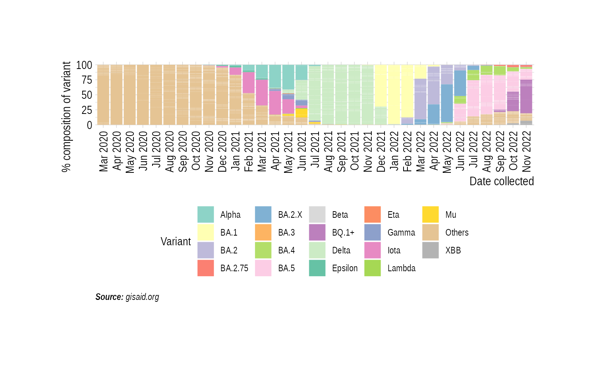
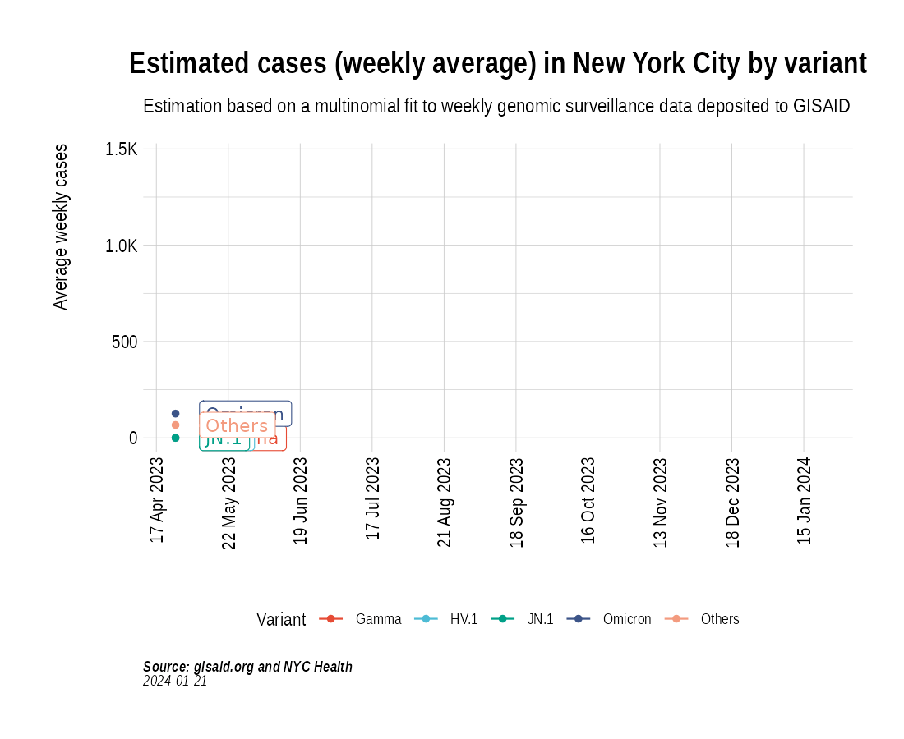

Animation of projected weekly cases - New York City
Source:vignettes/VariantAnimation-NYC.Rmd
VariantAnimation-NYC.RmdsuppressPackageStartupMessages({
library(covmuller)
library(COVID19)
library(tidyverse)
})
theme_set(CovmullerTheme())Get variants data for NY state
counties <- c("New York", "New York City", "New York County", "Queens County", "Bronx County", "Bronx", "Brooklyn", "Manhattan", "Queens", "Richmond County")
gisaid_metadata <- qs::qread("~/data/epicov/metadata_tsv_2023_09_21.qs")
gisaid_usa <- gisaid_metadata %>%
filter(Country == "USA") %>%
filter(Host == "Human")
# format metadata
gisaid_usa <- FormatGISAIDMetadata(gisaid_usa)
gisaid_usa <- gisaid_usa %>%
arrange(State, MonthYearCollected) %>%
filter(pangolin_lineage != "Unknown")
gisaid_NY <- gisaid_usa %>% filter(State == "New York")
gisaid_NYC <- gisaid_NY %>% filter(District %in% counties)
vocs <- GetVOCs()
custom_voc_mapping <- list(
`XBB` = "XBB.*",
`XBB.*` = "XBB.*",
`XBB.*.*` = "XBB.*",
`XBB.*.*.*` = "XBB.*",
`BQ.1` = "BQ.1",
`BQ.1.*` = "BQ.1",
`XBB.1` = "XBB.1.*",
`XBB.1.*` = "XBB.1.*",
#`XBB.1.5` = "XBB.1.5",
#`XBB.1.16` = "XBB.1.16",
#`XBB.1.16.*` = "XBB.1.16",
`EG.5` = "EG.5.*",
`EG.5.*` = "EG.5.*",
`EG.6` = "EG.6.*",
`EG.6.*` = "EG.6.*",
`FL.1.*` = "FL.1.*",
#`FL.4.*` = "FL.4.*",
`FU.1` = "FU.1.*",
`FU.1.*` = "FU.1.*",
#`FL.1.5.*` = "FL.1.5",
#`FL.1.6.*` = "FL.1.6",
`GJ.1.2` = "GJ.1.2"
)
gisaid_NYC <- gisaid_NYC %>% filter(pangolin_lineage != "None")
gisaid_NYC <- CollapseLineageToVOCs(
variant_df = gisaid_NYC,
vocs = vocs,
custom_voc_mapping = custom_voc_mapping,
summarize = FALSE
)Get weekly cases for New York
confirmed <- read_csv("https://raw.githubusercontent.com/nychealth/coronavirus-data/master/trends/data-by-day.csv") %>% select(date_of_interest, CASE_COUNT)
colnames(confirmed) <- c("date", "daily_cases")
confirmed$WeekYear <- tsibble::yearweek(confirmed$date)
confirmed$MonthYear <- GetMonthYear(confirmed$date, datefmt = "%m/%d/%Y")
confirmed_subset_dateweekwise_long <- confirmed %>%
group_by(WeekYear) %>%
summarise(n = ceiling(mean(daily_cases, na.rm = T))) %>%
arrange(WeekYear) %>%
rename(WeekYearCollected = WeekYear)
gisaid_NYC_weekwise <- SummarizeVariantsWeekwise(gisaid_NYC)Distribution of variants
state_month_counts <- SummarizeVariantsMonthwise(gisaid_NYC)
state_month_counts$State <- "NYC"
state_month_prevalence <- CountsToPrevalence(state_month_counts)
state_month_prevalence <- CollapseLineageToVOCs(
variant_df = state_month_prevalence,
vocs = vocs,
custom_voc_mapping = custom_voc_mapping, summarize = FALSE
)
p5 <- StackedBarPlotPrevalence(state_month_prevalence)
p5
Project weekly cases to variant prevalence data from GISAID
voc_to_keep <- gisaid_NYC_weekwise %>%
group_by(lineage_collapsed) %>%
summarise(n_sum = sum(n)) %>%
filter(n_sum > 50) %>%
pull(lineage_collapsed) %>%
unique()
gisaid_NYC_weekwise <- gisaid_NYC_weekwise %>% filter(lineage_collapsed %in% voc_to_keep)
newyork_cases_pred_prob_sel_long <- FitMultinomWeekly(gisaid_NYC_weekwise, confirmed_subset_dateweekwise_long)## # weights: 64 (45 variable)
## initial value 420022.238121
## iter 10 value 168225.954372
## iter 20 value 141877.915342
## iter 30 value 119671.878650
## iter 40 value 98219.905008
## iter 50 value 89775.554502
## iter 60 value 86607.533347
## iter 70 value 85621.458553
## iter 80 value 83908.995506
## iter 90 value 81784.278663
## iter 100 value 81300.436515
## iter 110 value 81024.276075
## iter 120 value 80198.117276
## iter 130 value 78357.611089
## iter 140 value 78216.701704
## iter 150 value 78154.847411
## iter 160 value 78107.565949
## iter 170 value 78092.518145
## iter 180 value 78078.460294
## iter 190 value 78077.236425
## iter 200 value 78077.095969
## iter 210 value 78073.620942
## iter 220 value 78069.300910
## iter 230 value 78066.799467
## iter 240 value 78053.284073
## iter 250 value 78048.692278
## iter 260 value 78036.140053
## iter 270 value 78027.800321
## final value 78026.661239
## convergedthe_anim <- PlotVariantPrevalenceAnimated(newyork_cases_pred_prob_sel_long, title = "Estimated cases (weekly average) in New York City by variant", caption = "**Source: gisaid.org and NYC Health**<br>", date_breaks = "14 days")
gganimate::anim_save(filename = here::here("docs/articles/NYC_animated.gif"), animation = the_anim)
Look at cases from 2023:
confirmed_subset_dateweekwise_long <- confirmed %>%
filter(MonthYear > "April 2023") %>%
group_by(WeekYear) %>%
summarise(n = ceiling(mean(daily_cases, na.rm = T))) %>%
arrange(WeekYear) %>%
rename(WeekYearCollected = WeekYear)
gisaid_NYC_subset <- gisaid_NYC %>% filter(MonthYearCollected > "April 2023")
gisaid_weekwise <- SummarizeVariantsWeekwise(gisaid_NYC_subset)
voc_to_keep <- gisaid_weekwise %>%
group_by(lineage_collapsed) %>%
summarise(n_sum = sum(n)) %>%
filter(n_sum > 1) %>%
pull(lineage_collapsed) %>%
unique()
gisaid_weekwise <- gisaid_weekwise %>% filter(lineage_collapsed %in% voc_to_keep)
cases_pred_prob_sel_long <- FitMultinomWeekly(gisaid_weekwise, confirmed_subset_dateweekwise_long)## # weights: 40 (27 variable)
## initial value 4462.409910
## iter 10 value 3160.835206
## iter 20 value 2895.492947
## iter 30 value 2886.362798
## iter 40 value 2885.914812
## iter 50 value 2885.734888
## iter 60 value 2885.708190
## iter 70 value 2885.705269
## iter 80 value 2885.697256
## final value 2885.693166
## convergedthe_anim <- PlotVariantPrevalenceAnimated(cases_pred_prob_sel_long, title = "Estimated cases (weekly average) in New York City by variant", caption = "**Source: gisaid.org and NYC Health**<br>")## [1m[22m`geom_line()`: Each group consists of only one observation.
## [36mℹ[39m Do you need to adjust the [32mgroup[39m aesthetic?
## [1m[22m`geom_line()`: Each group consists of only one observation.
## [36mℹ[39m Do you need to adjust the [32mgroup[39m aesthetic?gganimate::anim_save(filename = here::here("docs/articles/NYC_animated_2023.gif"), animation = the_anim)